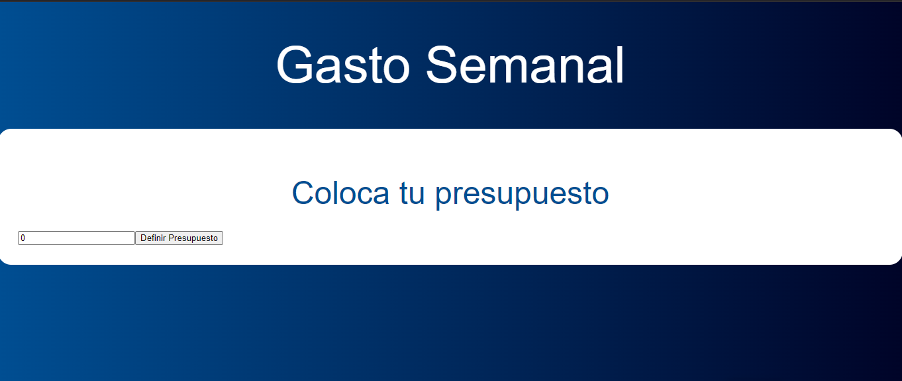
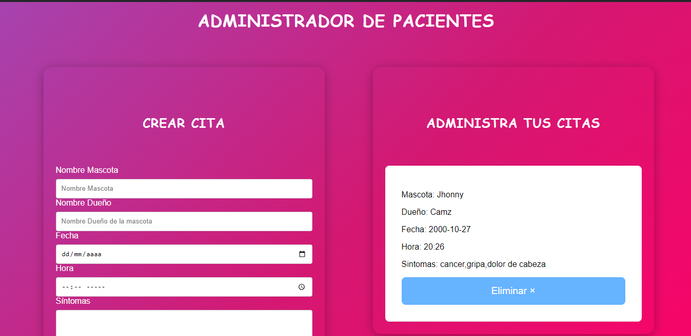
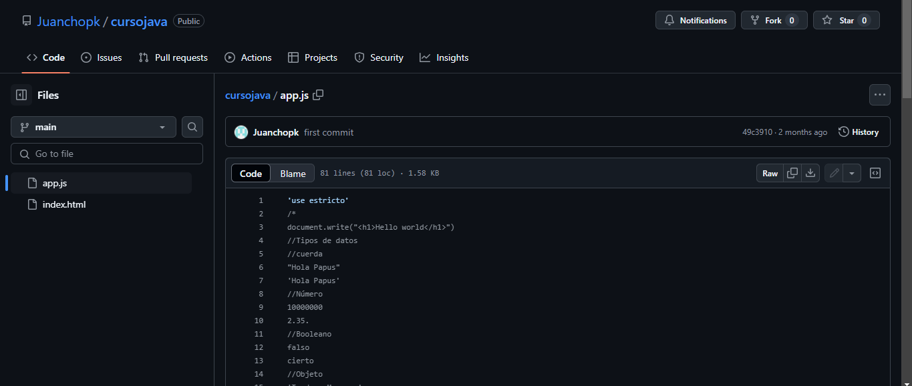
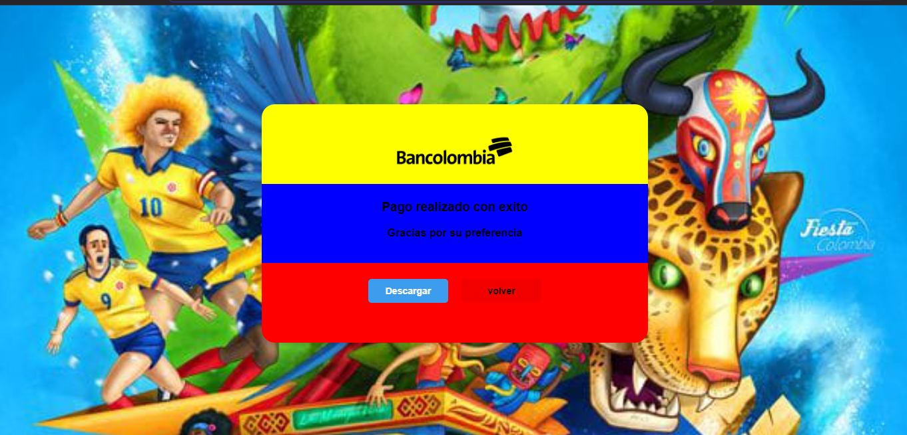
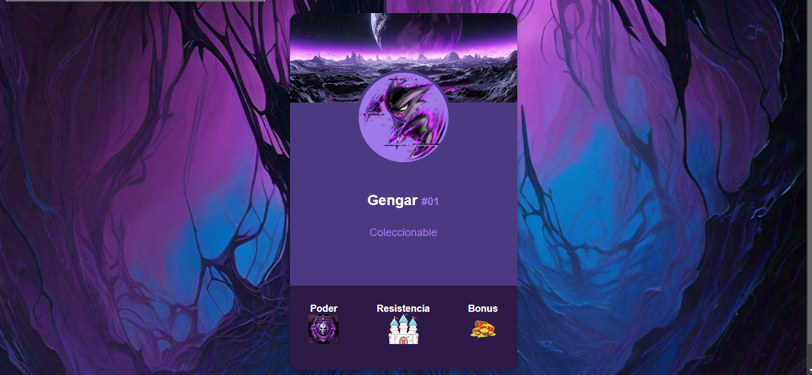
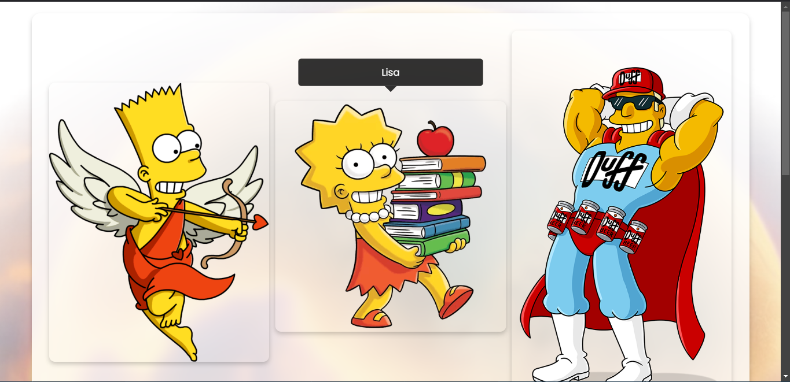
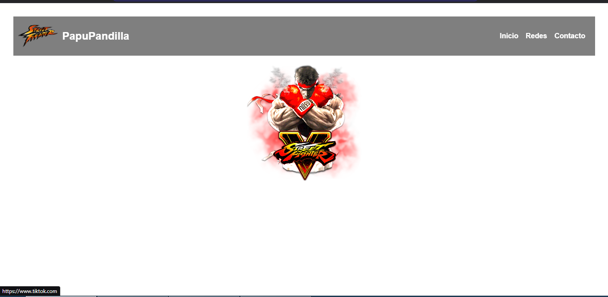

Mis Proyectos
Aquí puedes encontrar los proyectos en los que he trabajado.
Proyecto 1
Bienvenido a tu herramienta de control de gastos semanales. Esta página te permite llevar un registro detallado de tus finanzas personales, organizando y analizando tus ingresos y egresos de manera semanal. Con una interfaz fácil de usar, podrás ingresar tus compras, pagos y otros gastos, y visualizar un resumen de tu presupuesto, comparando lo gastado con lo planificado. También podrás identificar áreas donde puedas optimizar tu gasto y tomar decisiones más informadas para mejorar tu estabilidad financiera. ¡Empieza a gestionar tu dinero de manera más eficiente y toma el control de tu futuro financiero!
Proyecto 2
Bienvenido a tu espacio de organización y gestión de citas. Esta página te permite programar, modificar y hacer un seguimiento de tus citas personales o profesionales de manera fácil y eficiente. Con un diseño intuitivo, podrás ingresar detalles como la fecha, hora, lugar y descripción de cada cita, asegurándote de no olvidar ningún compromiso importante. Además, podrás recibir recordatorios para cada evento, optimizando tu tiempo y ayudándote a mantenerte organizado. Ya sea para reuniones de trabajo, consultas médicas o eventos sociales, esta herramienta te ayudará a gestionar tu agenda de manera efectiva.
Proyecto 3
Bienvenido a mi repositorio de proyectos en Java. Aquí encontrarás una colección de aplicaciones y ejercicios desarrollados utilizando el lenguaje de programación Java, desde conceptos básicos hasta implementaciones más complejas. Cada proyecto está diseñado para explorar diferentes aspectos de Java, como la programación orientada a objetos, la gestión de bases de datos, la creación de interfaces gráficas y mucho más. Este repositorio es un recurso tanto para estudiantes como para desarrolladores que buscan mejorar sus habilidades en Java y aprender nuevas técnicas. Si eres un apasionado de la programación en Java, este es el lugar perfecto para explorar, colaborar y contribuir.
Proyecto 4
Bienvenido a tu plataforma de descarga de facturas. Esta página te permite acceder y descargar tus facturas de manera rápida y segura, organizadas por fecha, tipo de servicio o proveedor. Con una interfaz fácil de usar, podrás buscar y seleccionar las facturas que necesitas con solo unos clics. Además, podrás ver detalles de cada factura antes de proceder a la descarga, asegurando que siempre tengas acceso a la información correcta. Ya sea para uso personal o profesional, esta herramienta simplifica la gestión de tus documentos fiscales, permitiéndote mantener un registro claro y ordenado de tus pagos.
Proyecto 5
Bienvenido a tu colección digital de cartas de Pokémon. En esta página, podrás explorar, organizar y gestionar tus cartas de Pokémon favoritas, desde las más raras hasta las más comunes. Ya sea que estés buscando una carta específica para completar tu colección o desees ver los detalles y estadísticas de cada carta, esta plataforma te proporciona una experiencia interactiva para todo amante de Pokémon. También podrás comparar tus cartas con otras, ver su valor en el mercado y obtener información sobre ediciones especiales o cartas promocionales. ¡Comienza tu aventura para capturar y coleccionar todas las cartas y conviértete en un verdadero maestro Pokémon!
Proyecto 6
Bienvenido a tu galería de imágenes de Los Simpson. En esta página podrás disfrutar de una amplia colección de imágenes, capturas y fan art inspirados en la famosa familia amarilla de Springfield. Desde momentos icónicos de la serie hasta escenas divertidas y creativas de tus personajes favoritos, aquí encontrarás imágenes para todos los gustos. Navega por categorías como citas célebres, episodios memorables, fan art y más. Ya seas un fanático de toda la serie o simplemente un amante de las aventuras de Homer, Marge, Bart, Lisa y Maggie, este sitio es el lugar perfecto para revivir los momentos más divertidos y sorprendentes de Los Simpson.
Proyecto 7
Bienvenido al Navegador del Bucaros, tu espacio dedicado a seguir la evolución y los eventos más importantes del Club Atlético Bucaramanga. En esta página podrás explorar toda la información relevante sobre el equipo, desde noticias actualizadas, estadísticas de jugadores, resultados de partidos, hasta la historia y logros del club. Con un diseño intuitivo y fácil de usar, podrás navegar por las últimas novedades, acceder a una sección de análisis de partidos y mantenerte al tanto de los próximos encuentros y competiciones. Únete a la comunidad de fanáticos del Bucaros y vive cada momento de la pasión por el fútbol desde tu navegador
Proyecto 8
¡Hola y bienvenido! Este es tu espacio para explorar y disfrutar de todo lo que tenemos para ofrecer. Ya sea que estés buscando información, entretenimiento o herramientas para facilitar tu día a día, aquí encontrarás todo lo que necesitas. Navega por nuestras secciones y descubre contenido actualizado, interactivo y diseñado especialmente para ti. Estamos comprometidos en brindarte la mejor experiencia, por lo que si tienes alguna duda o sugerencia, no dudes en contactarnos. ¡Gracias por visitarnos y esperamos que disfrutes tu tiempo en nuestro sitio!.
Proyecto 9
Descripción breve del proyecto 9. Tecnologías: JavaScript, React.
Proyecto 10
Descripción breve del proyecto 10. Tecnologías: HTML, CSS, Firebase.